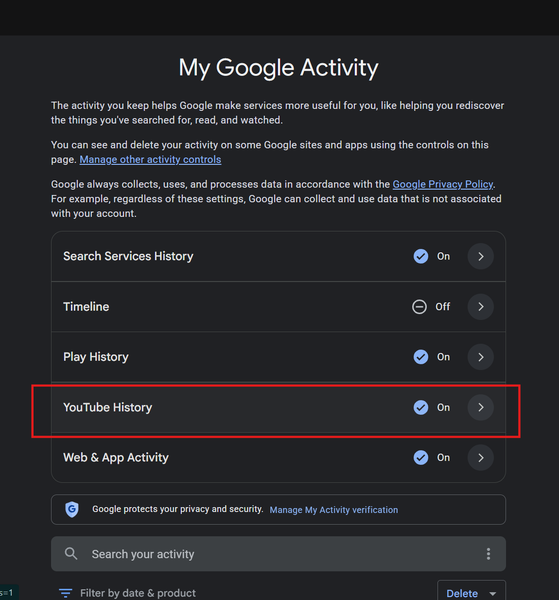
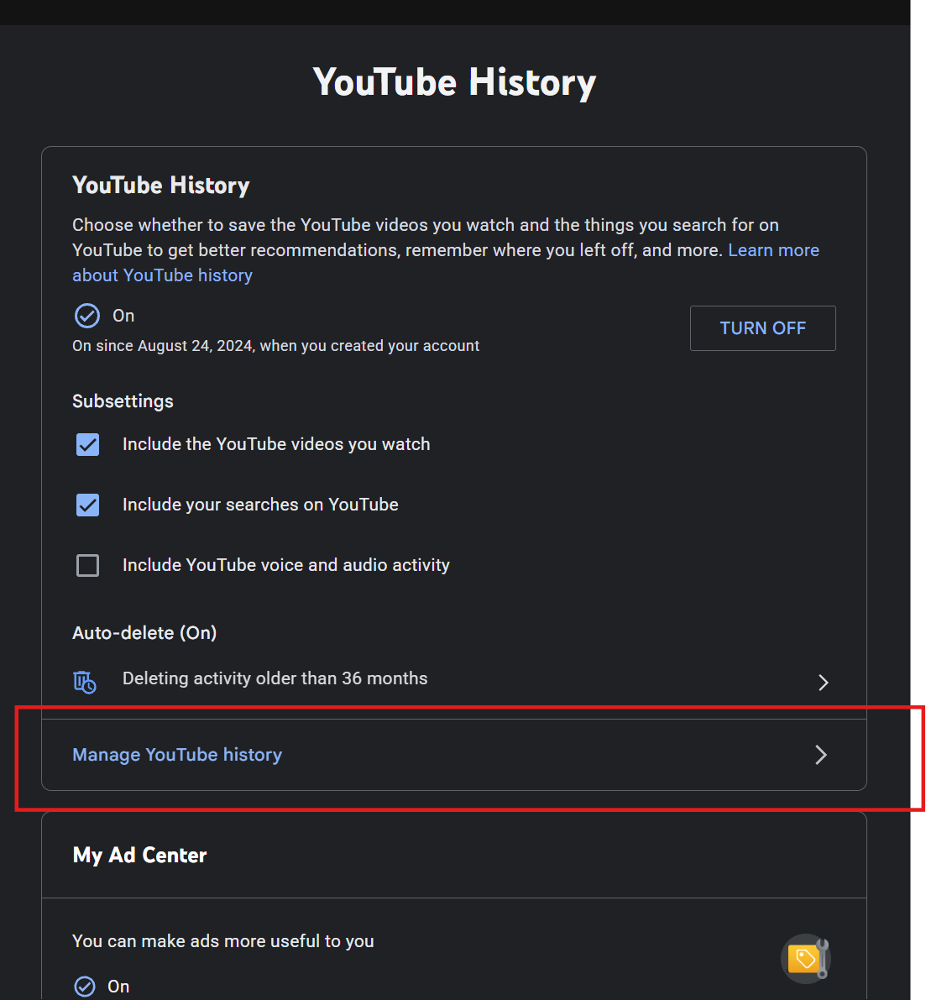
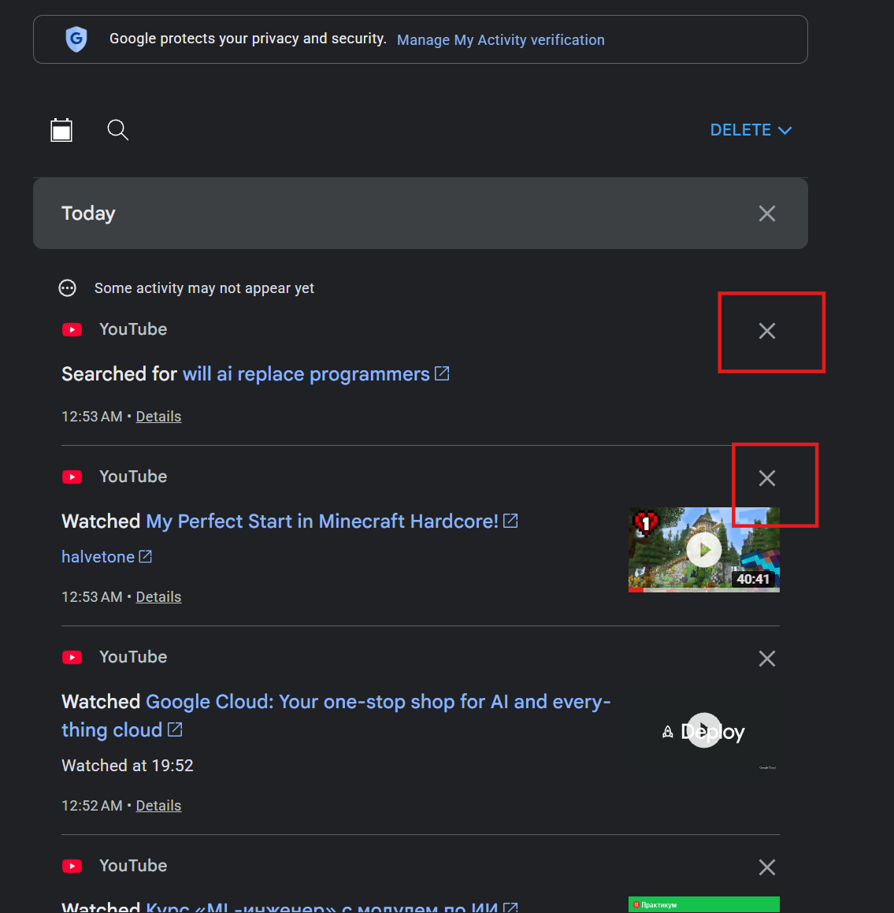

YouTube
Проверь историю
- Открой Google Мои действия ↗ и выбери "История YouTube" (YouTube History)

- Нажми "Управление историей YouTube" (Manage YouTube history)

- Посмотри записи просмотров и поиска. Крестик справа удаляет выбранную запись



Измени рекомендации
Можно удалить отдельные записи, очистить историю за период или приостановить её сбор. В меню рекомендованного ролика можно выбрать "Не интересует" или "Не рекомендовать видео с этого канала". Справка YouTube ↗